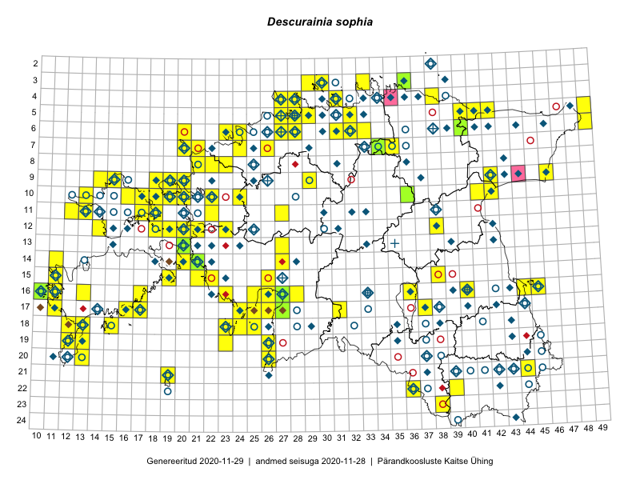

Descurainia sophia
Uuendatud: 2016-12-02
Kaardile koondatud taksonid: Descurainia sophia (L.) Webb ex Prantl

Kaart põhineb 92 kirjel, neist vaatlusi 90 ja eksemplare 2. Taksonit on leitud 74 ruudust.
Kuvatud viited 20 esimesele andmebaasikirjele, ülejäänud PlutoFis
- Rein Kalamees: 2015-06-08: 05-32: ala
- Peedu Saar, Toomas Kukk: 2015-05-28: 11-17: ala
- Peedu Saar, Toomas Kukk: 2015-05-27: 09-14: ala
- Toomas Kukk, Eerik Leibak: 2015-08-12: 10-17: ala
- Toomas Kukk, Eerik Leibak: 2015-08-10: 09-14: ala
- Ott Luuk: 2014-07-27: 12-20: GPS punkt
- Ott Luuk: 2014-07-24: 12-20: ala
- Peedu Saar, Elle Roosaluste: 2015-07-12: 13-20: ala
- Peedu Saar: 2015-07-14: 15-38: ala
- Tiit Hallikma, Toomas Kukk: 2015-07-22: 05-49: ala
- Toomas Kukk, Eerik Leibak: 2015-08-11: 09-15: ala
- Toomas Kukk, Eerik Leibak: 2015-07-29: 16-45: ala
- Toomas Kukk, Eerik Leibak: 2015-07-29: 16-44: ala
- Toomas Kukk: 2014-06-21: 16-10: ala
- Tiit Hallikma, Toomas Kukk: 2015-08-27: 12-21: ala
- Ott Luuk, Hannes Pehlak: 2015-07-21: 06-49: ala
- Ott Luuk, Hannes Pehlak: 2015-06-11: 17-31: ala
- Ott Luuk: 2015-05-30: 19-23: ala
- Jana-Maria Habicht, Ester Valdvee: 2015-07-20: 07-34: ala
- Meeli Mesipuu, Timo Luhamäe: 2015-07-24: 05-41: ala